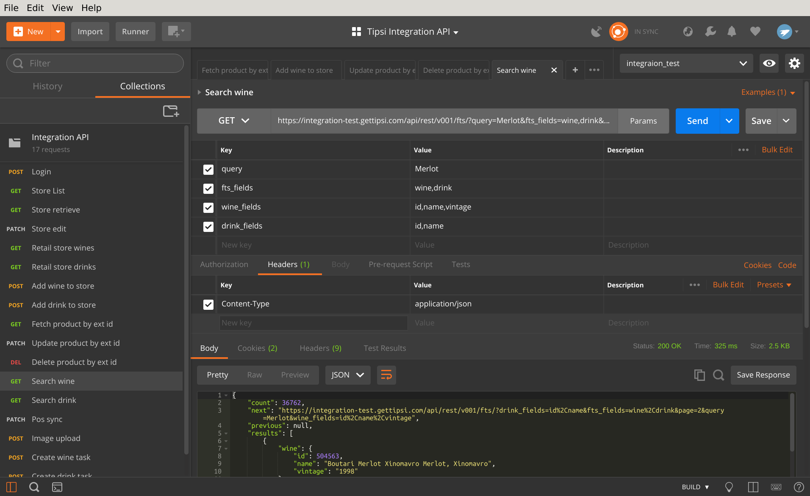
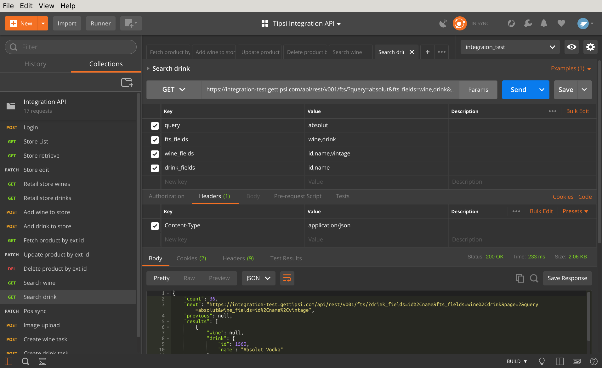

Full text search across Tipsi database¶
Full text search provides ability to search products by names across Tipsi database. Once you found the product, it can be added to inventory with endpoints described on List or create operations.
Search API Examples¶
Searching product by “Merlot” keyword
Searching product by “Absolut” keyword
See Full text search for more details.